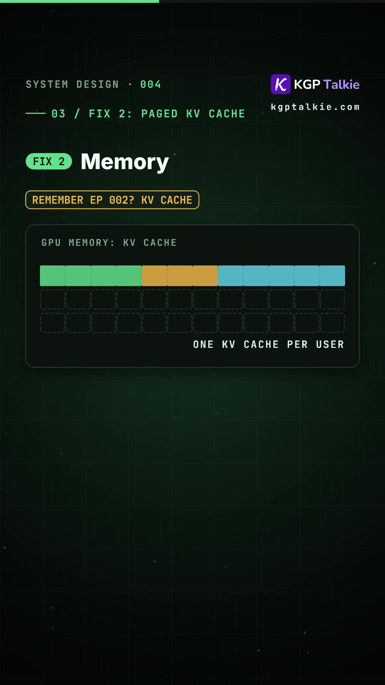
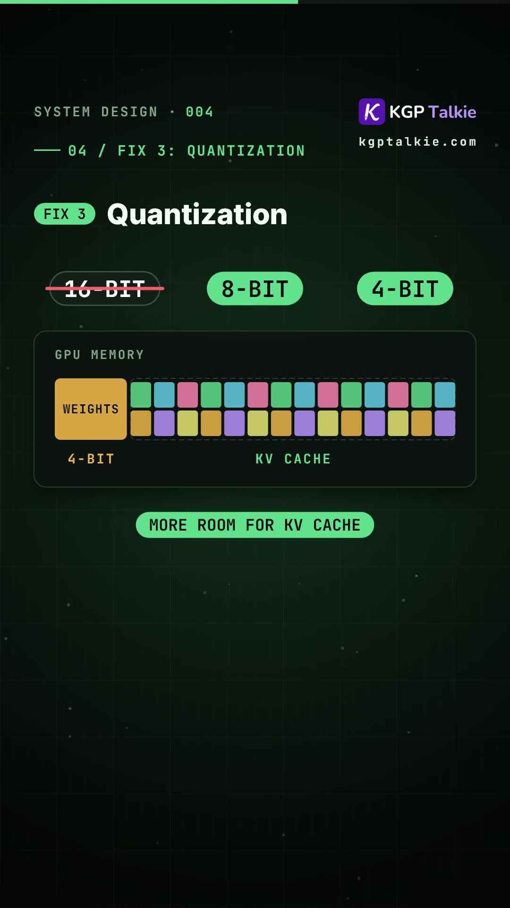
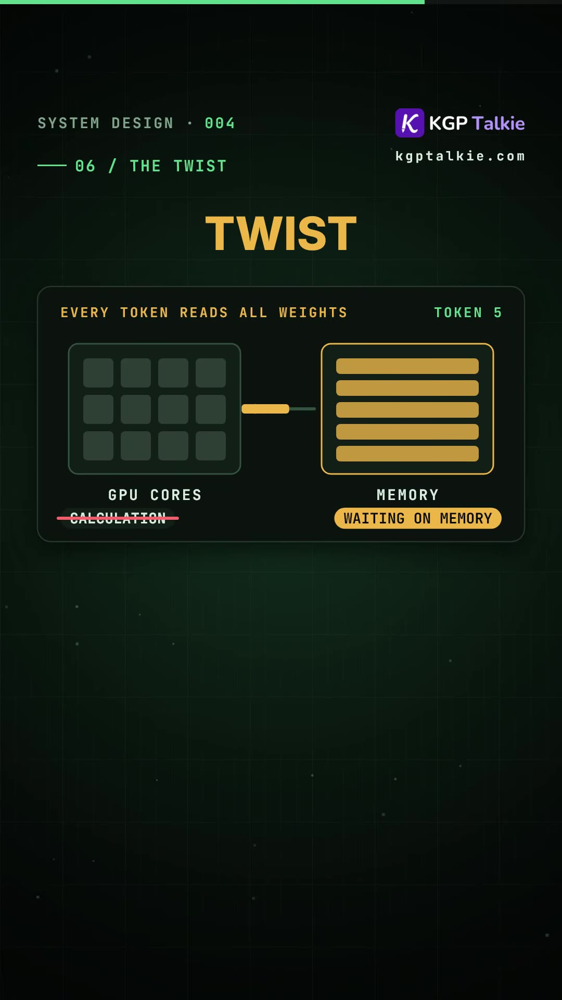
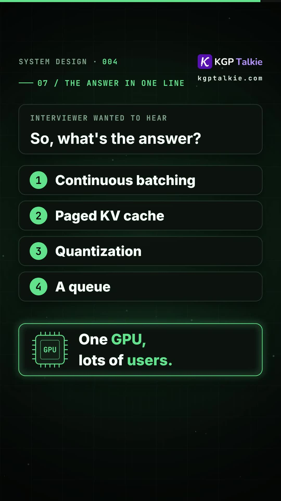

Executive Summary
In AI Systems Engineering interviews, a premier question asks: "Your customer support AI bot has 1,000,000 users, but your startup budget permits only 1 physical GPU. How do you maximize concurrent throughput without queue crashes or purchasing 50 additional H100 clusters?"
Junior engineers instinctively respond by recommending horizontal GPU clustering. However, senior AI infrastructure engineers understand that default naive HuggingFace or PyTorch inference wastes up to 80% of GPU compute and memory bandwidth due to sequential generation, static batch padding, and contiguous KV-cache allocation.
In this breakdown, AI educator Laxmikant presents the 4 core systems innovations (championed by frameworks like vLLM and TensorRT-LLM) that extract maximum concurrency from constrained GPU hardware.
Core Visual Demonstrations




The 4 Pillars of High-Throughput LLM Serving
1. Continuous Batching (Iteration-Level Scheduling)
The Problem with Static Batching: If user A requests a 10-word response and user B requests a 500-word essay, traditional batching forces user A's slot to sit idle with empty padding tokens for 490 iterations until user B finishes.
The Continuous Batching Solution: Implemented in vLLM, continuous batching operates like a metro train: at every single token-generation step, completed requests exit the batch immediately, and waiting requests from the arrival queue take their place. GPU compute cores maintain 100% saturation without wasted padding.
2. PagedAttention: Virtual Memory for the KV Cache
In autoregressive transformers, previously generated Key and Value vectors must be preserved in GPU memory (the KV Cache).
- Static Pre-Allocation (Naive): PyTorch pre-allocates contiguous memory for each request based on maximum context window (e.g. 4,096 tokens). Because most requests only use 200 tokens, 60%–80% of VRAM is locked in unused internal fragmentation.
- PagedAttention (vLLM): Inspired by OS virtual memory paging, PagedAttention stores KV cache in non-contiguous physical memory blocks (pages). Pages are allocated dynamically on-demand, enabling 2x to 4x higher concurrency on identical VRAM.
3. Model Weight Quantization (AWQ / GPTQ / FP8)
In an 80GB GPU, loading a 70B parameter model in standard FP16 (16-bit) requires $\approx 140\text{ GB}$ (exceeding single-card capacity).
Quantizing weights to 8-bit (FP8) or 4-bit (AWQ / GPTQ) compresses the model footprint to ~35–40 GB, leaving the remaining 40+ GB of high-speed VRAM entirely dedicated to housing concurrent user KV cache sessions.
4. The Memory-Bandwidth Twist: Why Batching is "Free"
Autoregressive generation is fundamentally memory-bandwidth bound, not compute bound:
For every individual token generated, the GPU must fetch all 8 to 70 billion parameters from High Bandwidth Memory (HBM) into its on-chip SRAM compute units.
Whether the GPU processes 1 user or 32 users in a batch, loading the model weights across the internal memory bus takes nearly the exact same amount of time. Therefore, increasing batch size up to the memory limit amortizes memory transfer latency, making incremental concurrent users nearly free from a compute perspective.